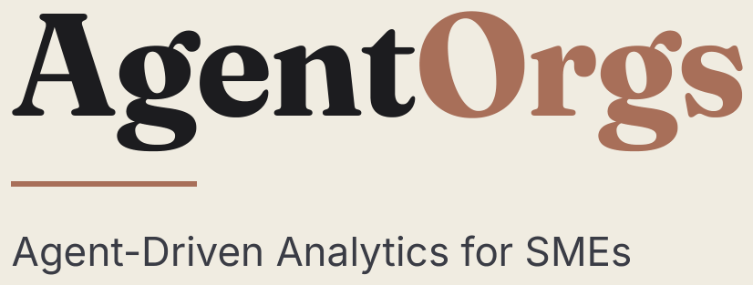

Your systems, combined into one.
Custom AI agents and purpose-built software take on the routine digital work, bring the records together, and free people for the work they actually do. One platform. The systems you want to keep stay connected. Nothing is ripped out on day one.
01 · The gap
SMEs are hemorrhaging value: the data and automation gap.
The work is happening. The record of it is scattered, late, or never used. These are the figures we start from, for companies in North America.
The figures are for companies in North America.
02 · Before
Fragmented, manual processes.
Every department keeps its own records, and none of them connect. Staff become the link, carrying information by hand from one tool to the next.
Operations & PM
Paper charts and binders
Own records, own format
Field & logistics
Paper logs and maps
Own records, own format
Time & people
Manual timesheets
Own records, own format
Finance & billing
Cash and ledgers
Own records, own format
No shared record: data is re-typed between departments, and nobody sees the whole job.
The cost: inefficient processes and unknown ROI
Budget variance
Not known until the job closes.
Labour utilization
No live view of who is working on what.
Revenue leakage
$10K to $1M lost a year (estimated).
03 · One system
One unified system, with AI agents.
Every department works from the same records, with agents doing the routine work. Photos, documents, analytics and a full activity log sit across every module. Entered once, used everywhere.
Operations & PM
Kanban board, projects, tasks
Field & logistics
Crews, schedules, site safety
Time & people
Timesheets, rates, payroll
Finance & billing
Invoices, POs, change orders
Process agent · Detects anomalies
Ingestion agent · Stages invoices
Continuous intelligence and ROI
Margin tracking
Live, job by job.
Utilization
Live, by person and job.
Revenue recovered
Leakage caught as it happens.
04 · The data
The data problems holding businesses back.
Companies collect plenty of data. Very little of it ever reaches a decision.
All the data you collect
Invoices · emails · timesheets · spreadsheets · sales
What reaches decisions
A fraction of the original
Scattered, unsorted data
Records sit across inboxes, spreadsheets and separate systems, with no structure to analyse.
Problems found too late
Errors, overruns and fraud surface weeks later, at month-end, or not at all.
No view of what’s coming
Demand, workload and cash flow are guessed instead of forecast.
Reports without answers
Dashboards show what happened, but not what to do about it.
05 · Analytics
Agentic analytics capabilities.
From sorting what already happened to recommending the next action. The same four colours run through the product: monitor, optimise, categorise, predict.
Real-time monitoring
Detecting irregularities and fraud instantly.
Performance optimization
AI agents recommending specific actions.
Data categorization
Automated sorting of business entities.
Predictive modeling
Accurately forecasting metrics and demand.
The full set — job costing, margin, demand, forecasting, crew utilisation, conversion, outliers and suggested actions — is on the agents and analytics page.
06 · Live
Working software, already in use every day.
Hours logged against a job go straight through to approval and invoicing. From a live deployment. Project details are blurred.

01 · Enter it once
Each person records what they are responsible for, as they see it. First-hand, then carried everywhere it is needed.
02 · Nothing slips through
With everything on record, nothing depends on memory. Bottlenecks, outliers and delays sit on one live view.
03 · Fewer systems to pay for
As the platform covers what a paid tool does, you decide whether that subscription is still worth keeping.
Built around the business
Stages, forms, rates and documents are set up to match how you already work. A contractor and a restoration firm do not get the same screens.
07 · Why now
Custom software takes months, not years.
AI-assisted development has cut the time and cost of building software. A system shaped around a business used to mean a multi-year project and a large team. Now it can be live in months.
Configured, not started from scratch
Proven modules are tailored to the business instead of being built from a blank page.
Custom costs less than it used to
Software that once needed a large team and a multi-year budget is now within reach of a mid-sized business.
08 · Delivered
Work we’ve already delivered.
The same pattern, configured to the trade. Client names stay off this page.
Operating platform for a contractor
Jobs, tenders, timesheets, safety forms, invoices and email in one system, used by the whole team every day.
Email agents for POs and project updates
Agents that read purchase orders and project notifications from the inbox and file them against the right job.
Logistics routing and fuel analytics
Map-based routing with outlier flagging, fuel cost analysis, and a daily view of the big picture.
Fleet management analytics
Dashboards that flag unusual vehicles and trips, and show where to save.
09 · Your data
Yours, kept separate, and handled carefully.
Privacy
Stored where you are, and kept separate.
- Your data is stored where you are, so it stays under your own privacy rules.
- Your own isolated environment. No other client can see your records.
- Role-based access, with approvals, settings and pay kept separate.
- Anything an agent pulls in waits for a person to approve it.
- We will sign your NDA before any data changes hands.